Niyam — UI Screenshot Gallery
Captured 2026-06-11 on a Pixel 9 emulator (API 34, headless) · build at commit
19068a2 · fresh install, real walkthrough (no mockups)Known nits visible in these captures, already handled: the switch dialog says "1 days" — fixed with a proper singular/plural resource right after capture. The duplicated roman line (main text + identical transliteration when language = English) is queued as a polish item.
Onboarding
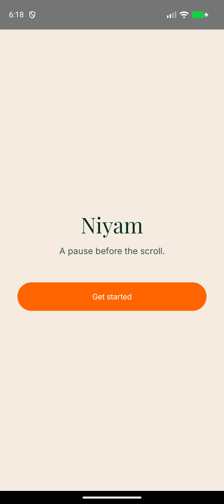
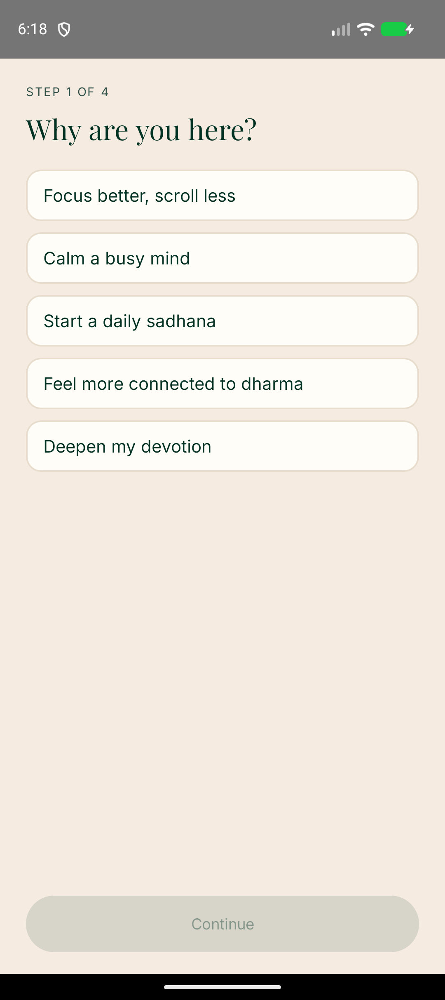
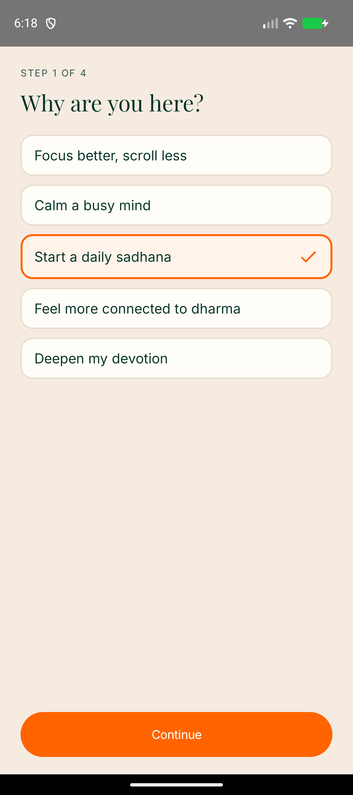
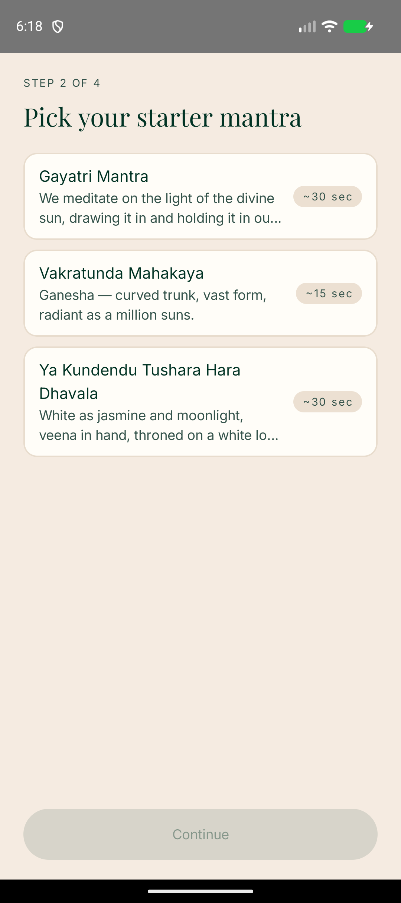
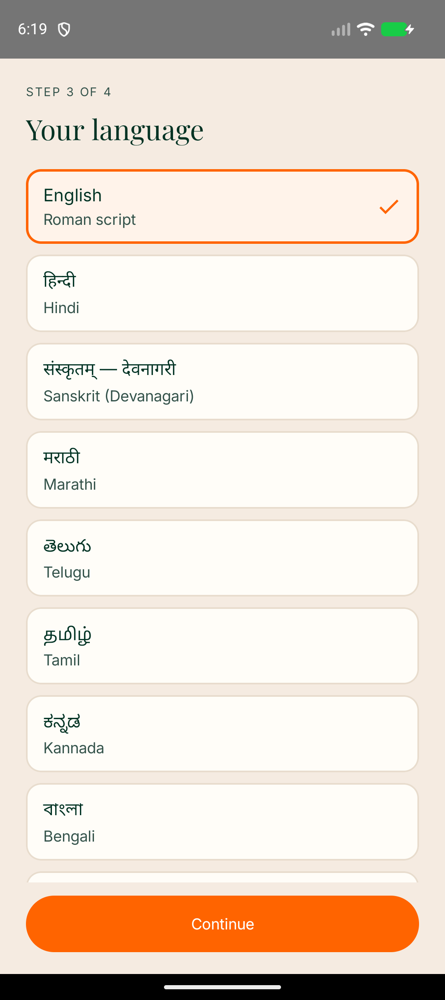
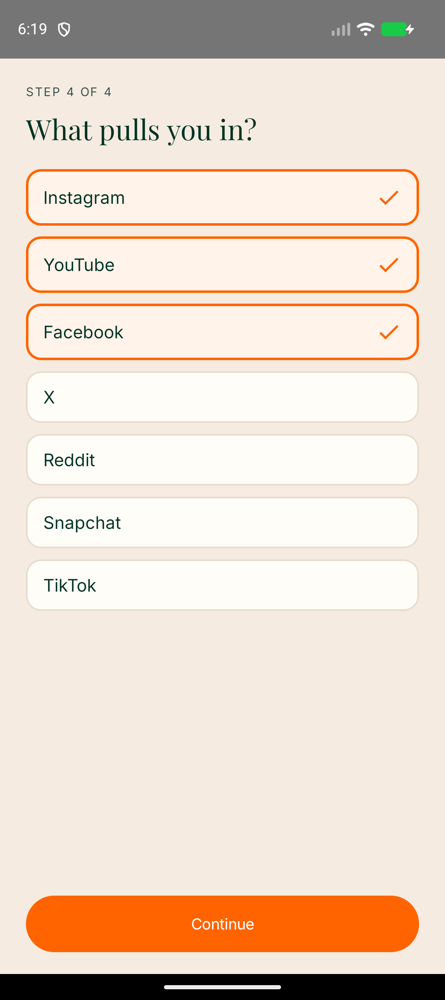
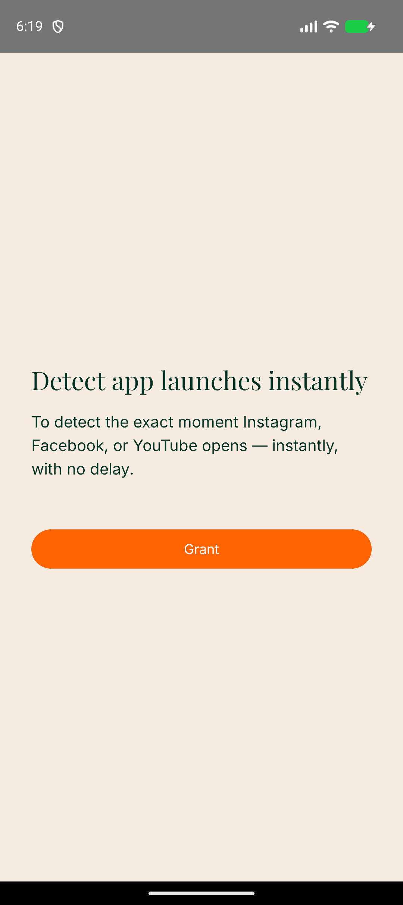
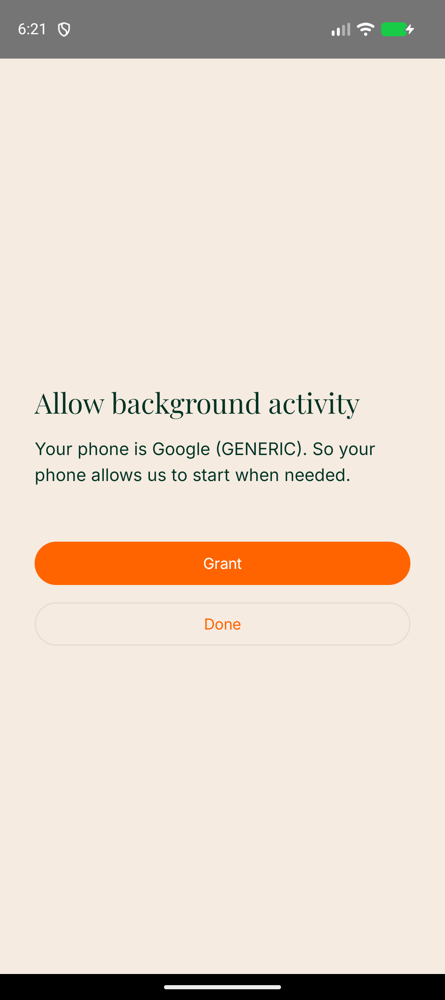
Home, Library, Detail (light)
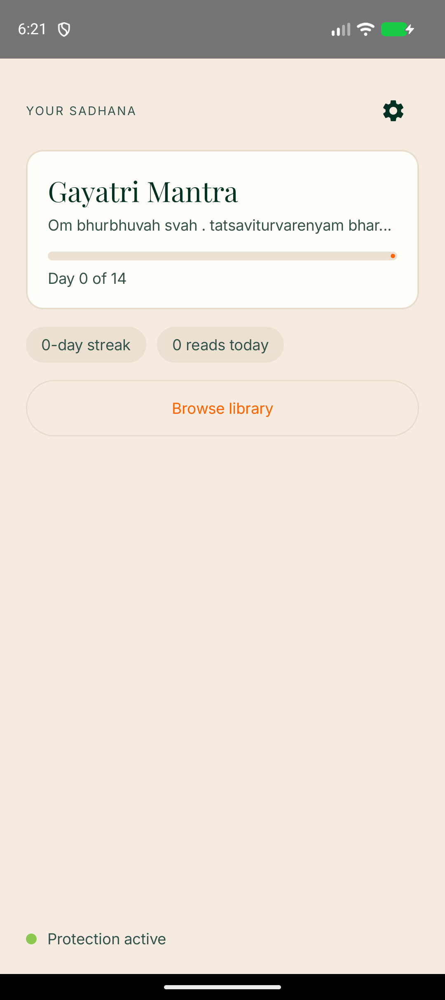
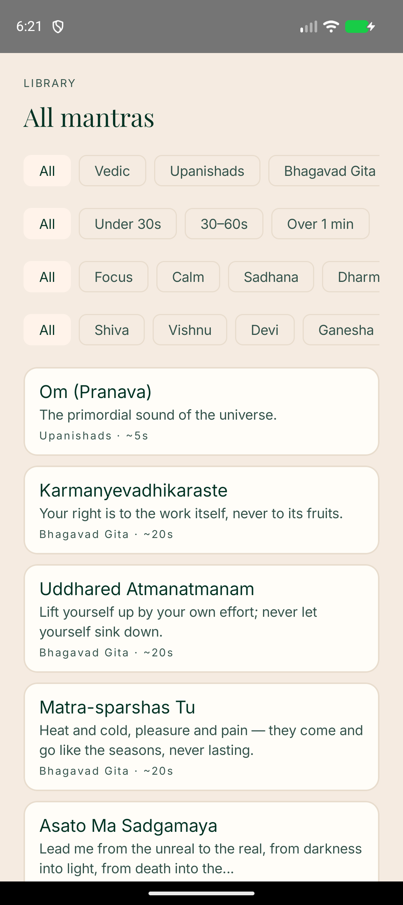
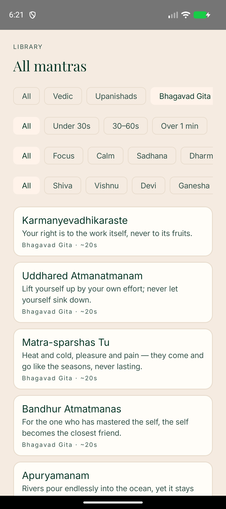
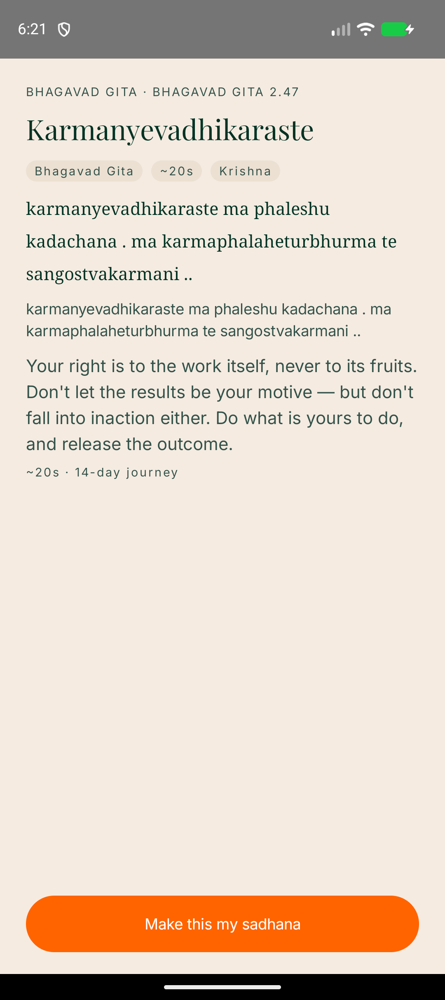
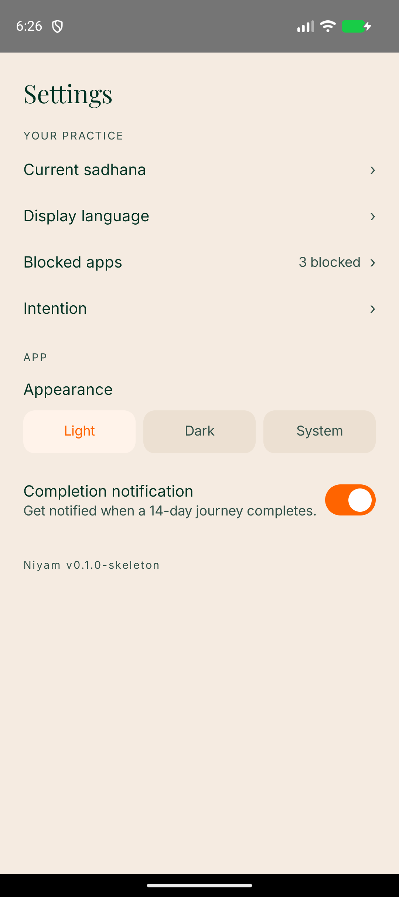
Dark mode (bottle green)
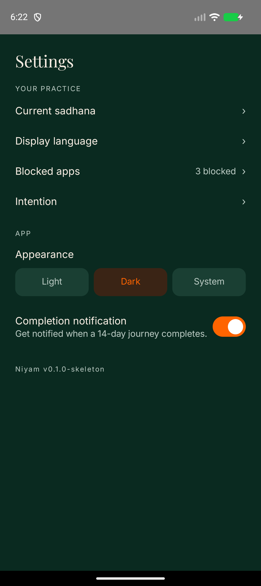
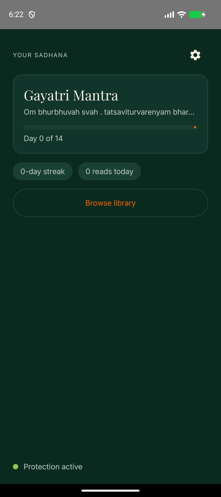
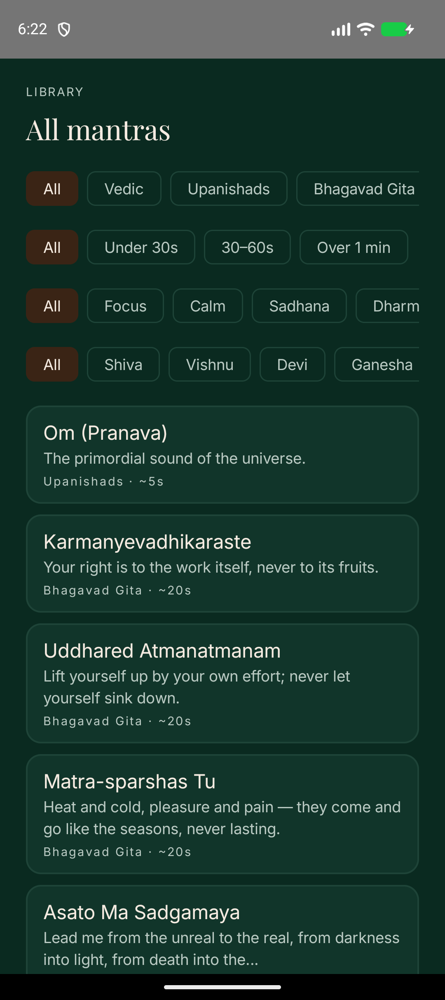
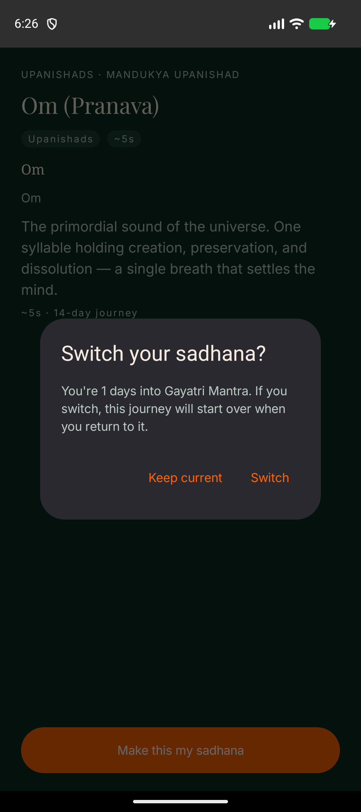
The core loop — overlay over YouTube
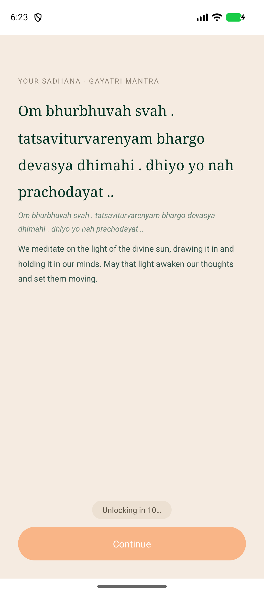
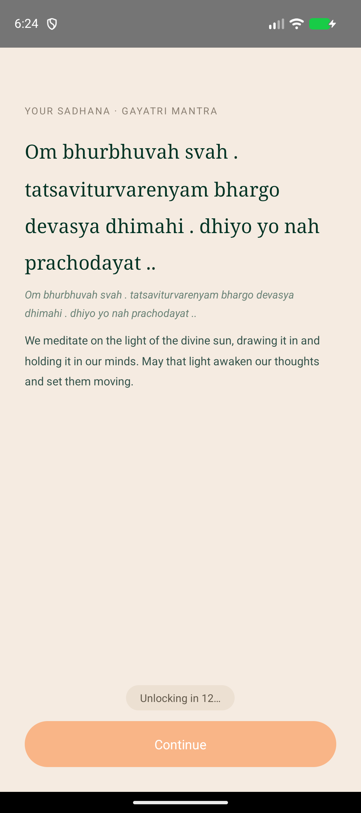
Engine findings from this walkthrough (not fixed — engine is zero-touch without explicit approval): (1) Continue grants only ~2 seconds of grace — the next in-app navigation inside YouTube re-triggers the overlay; (2) once re-shown, the overlay stays on top even after leaving the blocked app (home screen, other apps) until Continue is tapped. Details and recommendations in the session report.